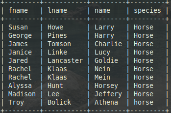
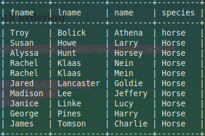
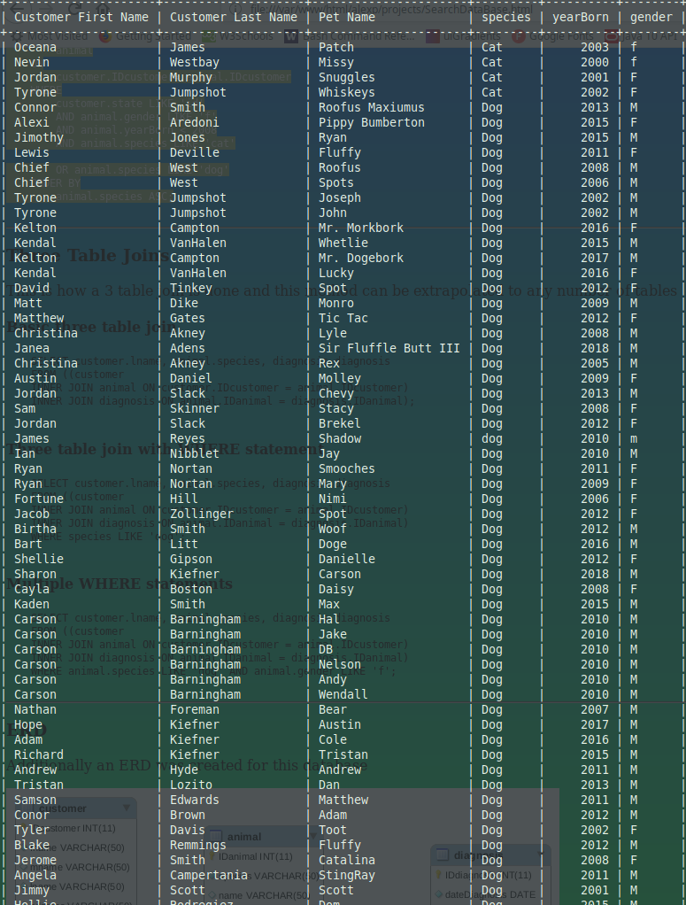
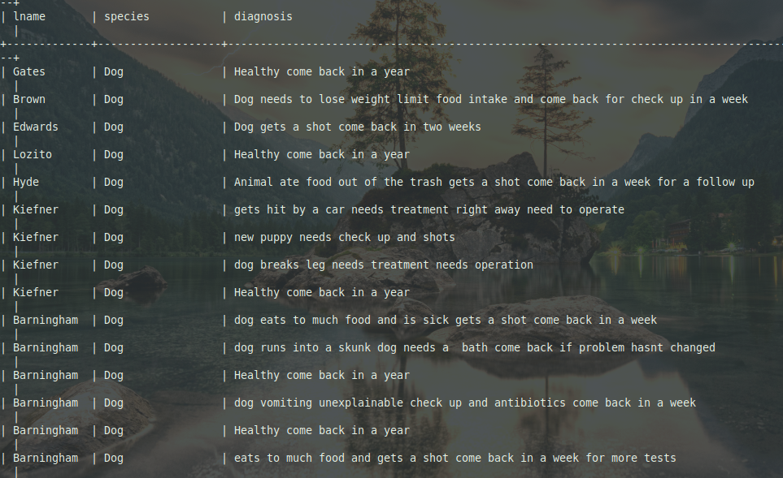
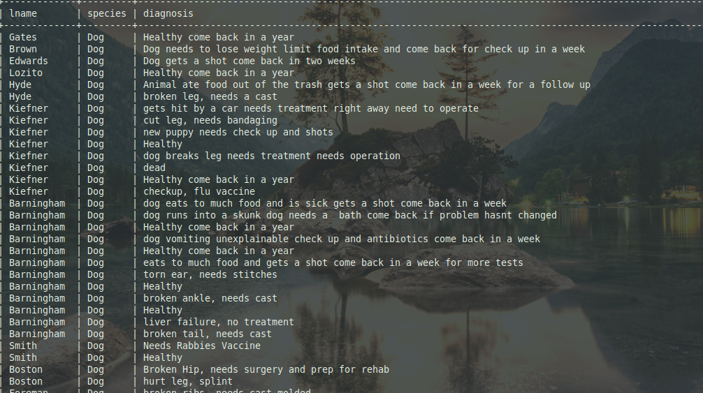
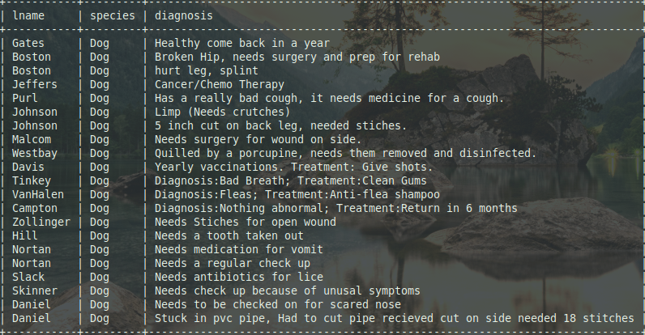
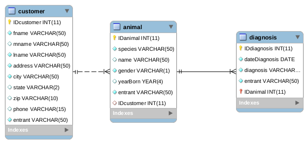

All searches that are described in this page come from a group database integrated from our class for a vet office
SELECT
customer.fname, customer.lname, animal.name, animal.species
FROM customer
INNER JOIN animal
ON
customer.IDcustomer = animal.IDcustomer
WHERE animal.species LIKE 'horse';

SELECT
customer.fname, customer.lname, animal.name, animal.species
FROM customer
INNER JOIN animal
ON
customer.IDcustomer = animal.IDcustomer
WHERE animal.species LIKE 'horse'
ORDER BY customer.lname ASC;

SELECT
customer.fname AS 'Customer First Name',
customer.lname AS 'Customer Last Name',
animal.name AS 'Pet Name',
animal.species,
animal.yearBorn,
animal.gender
FROM
customer
INNER JOIN
animal
ON
customer.IDcustomer= animal.IDcustomer
WHERE
customer.state LIKE 'id'
AND animal.gender LIKE 'f'
AND animal.yearBorn < 2008
AND animal.species LIKE 'cat'
OR animal.species LIKE 'dog'
ORDER BY
animal.species ASC;

This is how a 3 table join is done and this method can be extrapolated to any number of tables
SELECT customer.lname, animal.species, diagnosis.diagnosis
FROM ((customer
INNER JOIN animal ON customer.IDcustomer = animal.IDcustomer)
INNER JOIN diagnosis ON animal.IDanimal = diagnosis.IDanimal);

SELECT customer.lname, animal.species, diagnosis.diagnosis
FROM ((customer
INNER JOIN animal ON customer.IDcustomer = animal.IDcustomer)
INNER JOIN diagnosis ON animal.IDanimal = diagnosis.IDanimal)
WHERE species LIKE 'dog';

SELECT customer.lname, animal.species, diagnosis.diagnosis
FROM ((customer
INNER JOIN animal ON customer.IDcustomer = animal.IDcustomer)s
INNER JOIN diagnosis ON animal.IDanimal = diagnosis.IDanimal)
WHERE animal.species LIKE 'dog' AND animal.gender LIKE 'f';

Additionally an ERD was created for this database
